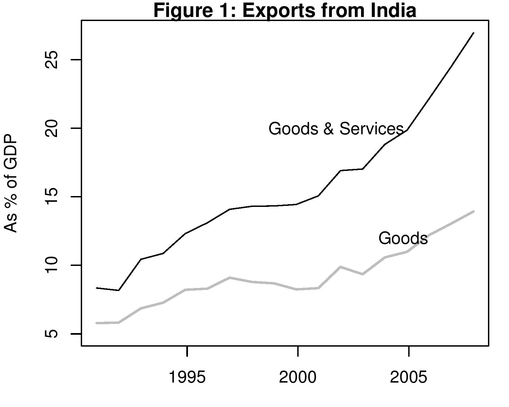

Figure of nine
Indian Express, 11 October 2007
As the probability of a recession in the US economy is seen to be rising, there is increasing concern about the impact it may have on India. It is common to ask the question: what is the extent of India's exposure to the US economy?
There are many ways of answering this question. In the immediate context we can look at the exposure of the banking sector to certain kinds of assets, especially those with a large exposure to the US housing sector. This is nearly nil and the banking sector is not likely to take a direct hit as some European and US banks would.
Or, we can look at capital flows and how flows to emerging markets and to India will change when interest rates and stock market returns in the US change. This analysis hogs the limelight as FII analysts focus on expectations about stock market indices in India and abroad. There is little consensus, but, in general, the India growth story is finding support in various analyst reports.
 A third way of looking at the impact of a slowdown in the US economy is through the trade link. How directly exposed are Indian exports to the US economy? What is the share of services in our exports that might be hit by a US recession? In the context of a fast globalising economy that has seen business cycle ups and down along with global cycles in the last 15 years, this could be a very important element in how the Indian economy will perform. Figure 1 shows that export of goods as a percent of GDP has risen rapidly from just above 5 percent to 14 percent in 2006-07. In other words, exports have grown much faster than GDP. Services exports have risen even faster. As a result, when goods and services are considered together, we find that at 27 percent, India exports more than one-fourth of its GDP. A slowdown in global trade and exports is thus unlikely to leave India unaffected.
In terms of direct exposure to the US, as Table 1 shows, the share of goods exported directly to the US is 15 percent of India's merchandise exports. This is 2 percent of India's GDP. A recession in the US may lead to a global slowdown. However, some economists expect that China may either not see a recession or witness a small impact. In that case it is to India's advantage that China's share in our exports has risen rapidly in recent years and stands at 6.5 percent today.
Table 1: Merchandise exports to US and China (2006-07) (in USD billion) (as % of India's exports) US 18.9 14.9 China 8.28 6.56 Table 1, however, refers only to the export of goods. Service exports from India in 2006-07 (including remittances) stood at USD 119 billion. At 13 percent of GDP this is nearly equal to goods exports. Here the destination country is not documented in the export data, but it can be assumed that the bulk of it is to the US. If we look at that component in the Balance of Payments statistics that is typically counted as service exports and is found in the category "Miscellaneous", we see that software exports, BPO, financial services and communications accounted for USD 62 billion in 2006-07. India has no previous experience with large service exports combined with a slowdown in the US economy. It is difficult to predict whether Fortune 500 companies will send more work to India in an effort to cut costs during a US recession, or reduce work in India when their business shrinks. In 2006-07 exports from this sector amounted to nearly 7 percent of GDP. Software exports stood at 3.4 percent, and BPO exports at 2.6 percent of GDP.
Table 2: Export of Services from India in USD billion As % of GDP All invisibles 119 13 Miscellaneous 62.2 6.82 Software 31.2 3.43 BPO 23.4 2.57 Financial Services 3.18 0.35 Communication 2.06 0.23 Put together this could imply that about 2 percent of India's GDP is directly affected by a US slowdown and another 7 percent i.e service exports, which have a high exposure to the US economy could be affected as well. A global slowdown would mean that many that other countries including China would witness a reduction in trade, and as a result the impact on Indian exports is likely to be much bigger.
In the coming months the major force behind trends in Indian exports is going to be the US and global story. In the past we have seen that changes in world GDP affect exports much more than small changes in prices. Trying to achieve a stable exports in such an environment through exchange rate manipulation or export sops will be futile.
Back up to Ila Patnaik's media page
Back up to Ila Patnaik's home page